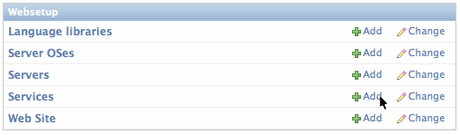
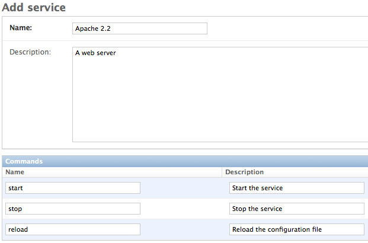

Online Management GUI v0.1 documentation
Services are very simple to create. When you define a service, you will also define the commands that apply to the service, such as start, stop, and reload.
You are not going to enter any installation or execution information here. That information is entered in each Server OS.
In the admin, click the Add button on the Service line.
Fill out the the Name field and optionally enter a description in the Description field.
Enter up to three commands for the service and optionally a description of what the command does.
Note
If you want to add more commands, click on the Save and Continue Editing button instead of Save. When you are done entering commands, click the Save button.
Click on the Save button.